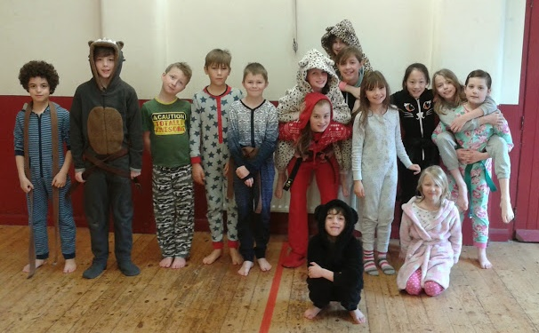

Sport Relief 2014
Posted on March 23, 2014
by Rik Hemsley
Well done Jamie Barker on a wonderful first Sport Relief for the school: Between 10am and 12pm, 28 of us turned up in our pyjamas or “onesies” to do karate like few could.

Event: The making up of the first “onesie” kata in the history of the world.
Earth’s captain did a fine job and raised £100 for a great cause!